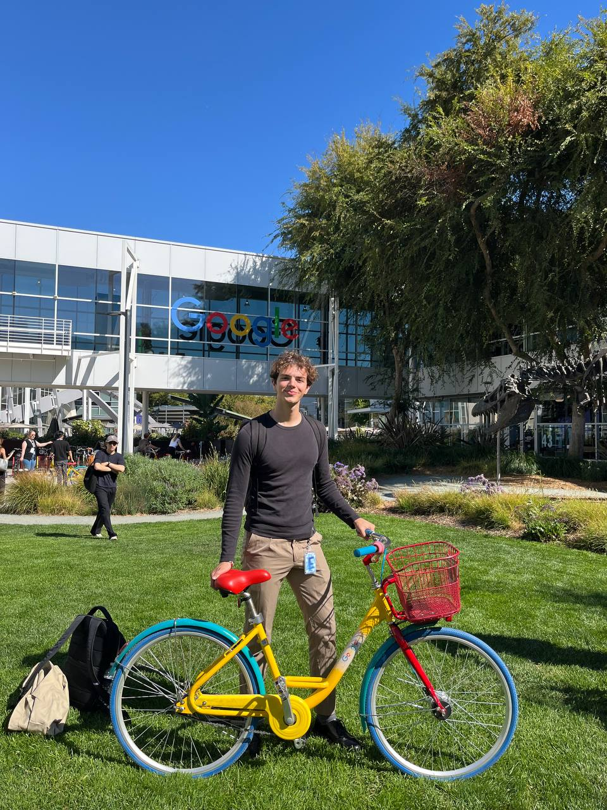

I sit at the intersection of frontier AI and market reality. At Google, I turned model behavior into narratives that drove $XXB in pipeline across XX+ markets, then deployed a persistent-memory agent across EMEA Sales that surfaced opportunity intent from live conversations — increasing closed pipeline by XX%.
I run agentic systems daily — Claude, GPT, Gemini, ComfyUI, ElevenLabs — and ship working tools, not decks. I believe the best work happens where creative instincts, research fluency, and a working demo still beat the strategy memo.
I grew up in a small Veneto town. Venice got me out. Bristol asked me who I was. I didn't have an answer yet.
Milan. Nielsen. C-level pitches at 22, learning to find the story inside the data. That was when I knew: the world had cracked open. No going back.
Paris. Madrid. Business school with tuition I couldn't afford. Gap year freelancing — building decks for rent money, creator-economy research for Night Ventures, operations for Mr Beast. No safety net, no one checking my work. I learned to figure it out fast.
Amsterdam. Tesla. I was 23, owning live pricing across a continent. The number moved, I moved — no deck, no buffer, just a P&L and a deadline. I loved the pace. I loved the weight of real money. And I left, because somewhere in that intensity I'd learned what I was actually good at: not just operating, but building.
Dublin. Two years at Google. APMM, then PMM. Translating frontier AI into narratives that moved billions in pipeline. Four countries, three languages, every odd job — they all made sense here. This was the voice I'd been chasing since Bristol.
Along the way I taught myself to code. Built agentic systems. Shipped tools, not slide decks.
Take something complex. Understand it deeply. Make it simple enough for someone to act on. Where demo beats memo.